Web Server Ýstatistikleri: dergidunyasi.com.tr
Web Server Ýstatistikleri: dergidunyasi.com.tr
Program baþlagýcý: Paz,30-Nis-2023 15:26.
Analiz edilen tarih aralýðý: Paz,26-Haz-2022 00:00 / Paz,26-Haz-2022 11:18 (0.47 gün).
Web Server Ýstatistikleri: dergidunyasi.com.trProgram baþlagýcý: Paz,30-Nis-2023 15:26.
Analiz edilen tarih aralýðý: Paz,26-Haz-2022 00:00 / Paz,26-Haz-2022 11:18 (0.47 gün).
(Git: Ýlk Sayfa | Genel Özet | Aylýk Rapor | Günlük Özet | Saatlik Özet | Site Tipi Raporu | Organizasyon Raporu | Yönlendirmeler Raporu | Baþarýsýz Gönderiler Raporu | Gönderici Site Raporu | Kullanýlan Browser Raporu | Kullanýlan Browserlar Özeti | Ýþletim Sistemi Raporu | Durum Kodu Raporu | Dosya Boyutu Raporu | Dosya Tipi Raporu | Dizin Raporu | Eriþim Raporu)
Baþarýlý eriþimler: 9 121
Baþarýlý eriþimler günlük ortalamasý : 19 369
Sayfalara yapýlan baþarýlý eriþimler: 505
Sayfalara yapýlan baþarýlý eriþimler günlük ortalamasý: 1 070
Baþarýsýz eriþimler: 496
Yönlendirilen eriþimler: 436
Eriþilen belirgin dosya sayýsý: 552
Servis verilen belirgin host sayýsý: 310
Transfer edilen bilgi: 286.30 megabytes
Transfer edilen bilgi günlük ortalamasý: 608.06 megabytes
(Git: Ýlk Sayfa | Genel Özet | Aylýk Rapor | Günlük Özet | Saatlik Özet | Site Tipi Raporu | Organizasyon Raporu | Yönlendirmeler Raporu | Baþarýsýz Gönderiler Raporu | Gönderici Site Raporu | Kullanýlan Browser Raporu | Kullanýlan Browserlar Özeti | Ýþletim Sistemi Raporu | Durum Kodu Raporu | Dosya Boyutu Raporu | Dosya Tipi Raporu | Dizin Raporu | Eriþim Raporu)
Herbir ünite ( ) sayfaya 15 kez eriþimi gösterir (sayfadaki nesnelere eriþim dahil).
) sayfaya 15 kez eriþimi gösterir (sayfadaki nesnelere eriþim dahil).
| ay | eriþim | sayfa | |
|---|---|---|---|
| Haz 2022 | 9121 | 505 |   |
En meþgul ay: Haz 2022 (505 kez eriþimi gösterir).
(Git: Ýlk Sayfa | Genel Özet | Aylýk Rapor | Günlük Özet | Saatlik Özet | Site Tipi Raporu | Organizasyon Raporu | Yönlendirmeler Raporu | Baþarýsýz Gönderiler Raporu | Gönderici Site Raporu | Kullanýlan Browser Raporu | Kullanýlan Browserlar Özeti | Ýþletim Sistemi Raporu | Durum Kodu Raporu | Dosya Boyutu Raporu | Dosya Tipi Raporu | Dizin Raporu | Eriþim Raporu)
Herbir ünite () sayfaya 15 kez eriþimi gösterir (sayfadaki nesnelere eriþim dahil).
| gün | eriþim | sayfa | |
|---|---|---|---|
| Paz | 9121 | 505 | |
| Pts | 0 | 0 | |
| Sal | 0 | 0 | |
| Çrþ | 0 | 0 | |
| Prþ | 0 | 0 | |
| Cum | 0 | 0 | |
| Cts | 0 | 0 |
(Git: Ýlk Sayfa | Genel Özet | Aylýk Rapor | Günlük Özet | Saatlik Özet | Site Tipi Raporu | Organizasyon Raporu | Yönlendirmeler Raporu | Baþarýsýz Gönderiler Raporu | Gönderici Site Raporu | Kullanýlan Browser Raporu | Kullanýlan Browserlar Özeti | Ýþletim Sistemi Raporu | Durum Kodu Raporu | Dosya Boyutu Raporu | Dosya Tipi Raporu | Dizin Raporu | Eriþim Raporu)
Herbir ünite () sayfaya 6 kez eriþimi gösterir (sayfadaki nesnelere eriþim dahil).
| sa | eriþim | sayfa | |
|---|---|---|---|
| 0 | 3343 | 271 |   |
| 1 | 589 | 57 | |
| 2 | 386 | 23 | |
| 3 | 327 | 31 | |
| 4 | 268 | 26 | |
| 5 | 128 | 9 | |
| 6 | 1135 | 24 | |
| 7 | 1665 | 29 | |
| 8 | 1265 | 33 | |
| 9 | 14 | 1 | |
| 10 | 0 | 0 | |
| 11 | 1 | 1 | |
| 12 | 0 | 0 | |
| 13 | 0 | 0 | |
| 14 | 0 | 0 | |
| 15 | 0 | 0 | |
| 16 | 0 | 0 | |
| 17 | 0 | 0 | |
| 18 | 0 | 0 | |
| 19 | 0 | 0 | |
| 20 | 0 | 0 | |
| 21 | 0 | 0 | |
| 22 | 0 | 0 | |
| 23 | 0 | 0 |
(Git: Ýlk Sayfa | Genel Özet | Aylýk Rapor | Günlük Özet | Saatlik Özet | Site Tipi Raporu | Organizasyon Raporu | Yönlendirmeler Raporu | Baþarýsýz Gönderiler Raporu | Gönderici Site Raporu | Kullanýlan Browser Raporu | Kullanýlan Browserlar Özeti | Ýþletim Sistemi Raporu | Durum Kodu Raporu | Dosya Boyutu Raporu | Dosya Tipi Raporu | Dizin Raporu | Eriþim Raporu)
site tipleri listeleniyor, Sýralama: eriþim miktarý.
| eriþim | bytes% | site tipi |
|---|---|---|
| 9121 | 100% | [Çözümlenmemiþ sayýsal adres] |
(Git: Ýlk Sayfa | Genel Özet | Aylýk Rapor | Günlük Özet | Saatlik Özet | Site Tipi Raporu | Organizasyon Raporu | Yönlendirmeler Raporu | Baþarýsýz Gönderiler Raporu | Gönderici Site Raporu | Kullanýlan Browser Raporu | Kullanýlan Browserlar Özeti | Ýþletim Sistemi Raporu | Durum Kodu Raporu | Dosya Boyutu Raporu | Dosya Tipi Raporu | Dizin Raporu | Eriþim Raporu)
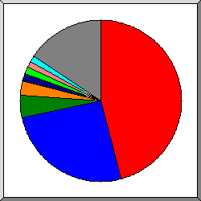
Dilimlerin temsil ettiði büyüklük: eriþim sayýsý.
 78
78
 176.234
176.234
 146.59
146.59
 51
51
 3
3
 159.203
159.203
 161.35
161.35
 82
82
 23
23
 88
88
 diðer
diðer
Ýlk 20 organizasyonlar listeleniyor . Sýralama: eriþim sayýsý, Sýralama: eriþim sayýsý.
| eriþim | bytes% | organizasyon |
|---|---|---|
| 5622 | 27.52% | 78 |
| 591 | 5.13% | 176.234 |
| 355 | 5.13% | 146.59 |
| 198 | 3.14% | 51 |
| 171 | 4.62% | 3 |
| 162 | 3.36% | 159.203 |
| 156 | 3.47% | 161.35 |
| 123 | 2.96% | 82 |
| 117 | 3.92% | 23 |
| 110 | 1.72% | 88 |
| 98 | 3.50% | 216.131 |
| 95 | 3.36% | 54 |
| 89 | 3.44% | 65.154 |
| 81 | 1.68% | 157.230 |
| 75 | 2.81% | 205.169 |
| 67 | 1.90% | 34 |
| 58 | 1.79% | 27 |
| 52 | 1.66% | 176.88 |
| 50 | 1.71% | 212.102 |
| 48 | 1.71% | 171.13 |
| 803 | 15.48% | [not listed: 89 organizasyonlar] |
(Git: Ýlk Sayfa | Genel Özet | Aylýk Rapor | Günlük Özet | Saatlik Özet | Site Tipi Raporu | Organizasyon Raporu | Yönlendirmeler Raporu | Baþarýsýz Gönderiler Raporu | Gönderici Site Raporu | Kullanýlan Browser Raporu | Kullanýlan Browserlar Özeti | Ýþletim Sistemi Raporu | Durum Kodu Raporu | Dosya Boyutu Raporu | Dosya Tipi Raporu | Dizin Raporu | Eriþim Raporu)
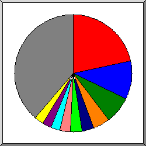
Dilimlerin temsil ettiði büyüklük: yönlendirilmiþ eriþim sayýsý.
https://dergidunyasi.com.tr/
http://dergidunyasi.com.tr/
https://www.google.com/
http://dergidunyasi.com.tr/admin/website/footer
http://dergidunyasi.com.tr/admin/categories/create
http://dergidunyasi.com.tr/admin/website/custom-pages/edit/home
http://dergidunyasi.com.tr/admin/website/header
https://dergidunyasi.com.tr/admin/languages/5
http://dergidunyasi.com.tr/admin/website/custom-pages/create
http://dergidunyasi.com.tr/step3
diðer
Ýlk 30 gönderici URLler listeleniyor . Sýralama: yönlendirilmiþ eriþim sayýsý, Sýralama: yönlendirilmiþ eriþim sayýsý.
(Git: Ýlk Sayfa | Genel Özet | Aylýk Rapor | Günlük Özet | Saatlik Özet | Site Tipi Raporu | Organizasyon Raporu | Yönlendirmeler Raporu | Baþarýsýz Gönderiler Raporu | Gönderici Site Raporu | Kullanýlan Browser Raporu | Kullanýlan Browserlar Özeti | Ýþletim Sistemi Raporu | Durum Kodu Raporu | Dosya Boyutu Raporu | Dosya Tipi Raporu | Dizin Raporu | Eriþim Raporu)
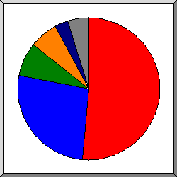
Dilimlerin temsil ettiði büyüklük: baþarýsýz eriþim sayýsý.
https://www.google.com/
http://dergidunyasi.com.tr/
http://dergidunyasi.com.tr/admin/website/header
http://dergidunyasi.com.tr/step4
diðer
gönderici URLler listeleniyor, Sýralama: baþarýsýz eriþim sayýsý.
(Git: Ýlk Sayfa | Genel Özet | Aylýk Rapor | Günlük Özet | Saatlik Özet | Site Tipi Raporu | Organizasyon Raporu | Yönlendirmeler Raporu | Baþarýsýz Gönderiler Raporu | Gönderici Site Raporu | Kullanýlan Browser Raporu | Kullanýlan Browserlar Özeti | Ýþletim Sistemi Raporu | Durum Kodu Raporu | Dosya Boyutu Raporu | Dosya Tipi Raporu | Dizin Raporu | Eriþim Raporu)
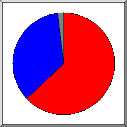
Dilimlerin temsil ettiði büyüklük: eriþim sayýsý.
https://dergidunyasi.com.tr/
http://dergidunyasi.com.tr/
diðer
gönderici siteler listeleniyor, Sýralama: eriþim sayýsý.
| eriþim | site |
|---|---|
| 4196 | https://dergidunyasi.com.tr/ |
| 4188 | http://dergidunyasi.com.tr/ |
| 57 | https://mail.dergidunyasi.com.tr/ |
| 43 | http://mail.dergidunyasi.com.tr/ |
| 11 | https://cpanel.dergidunyasi.com.tr/ |
| 7 | https://www.google.com/ |
| 5 | http://cpanel.dergidunyasi.com.tr/ |
| 5 | https://twitter.com/ |
| 4 | http://www.dergidunyasi.com.tr/ |
| 2 | http://baidu.com/ |
| 2 | https://bionluk.com/ |
| 2 | http://185.126.216.74/ |
(Git: Ýlk Sayfa | Genel Özet | Aylýk Rapor | Günlük Özet | Saatlik Özet | Site Tipi Raporu | Organizasyon Raporu | Yönlendirmeler Raporu | Baþarýsýz Gönderiler Raporu | Gönderici Site Raporu | Kullanýlan Browser Raporu | Kullanýlan Browserlar Özeti | Ýþletim Sistemi Raporu | Durum Kodu Raporu | Dosya Boyutu Raporu | Dosya Tipi Raporu | Dizin Raporu | Eriþim Raporu)
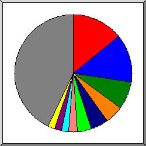
Dilimlerin temsil ettiði büyüklük: sayfa eriþim sayýsý.
Go-http-client/1.1
Mozilla/5.0 (Windows NT 10.0; Win64; x64) AppleWebKit/537.36 (KHTML, like Gecko) Chrome/112.0.0.0 Safari/537.36
Mozilla/5.0 (Windows NT 10.0; Win64; x64; rv:109.0) Gecko/20100101 Firefox/111.0
Mozilla/5.0 (Windows NT 10.0; Win64; x64) AppleWebKit/537.36 (KHTML, like Gecko) Chrome/67.0.3396.99 Safari/537.36
Mozilla/5.0 (Windows NT 10.0; Win64; x64) AppleWebKit/537.36 (KHTML, like Gecko) Chrome/42.0.2311.135 Safari/537.36 Edge/12.246
Mozilla/5.0 (X11; Linux x86_64) AppleWebKit/537.36 (KHTML, like Gecko) Chrome/83.0.4103.97 Safari/537.36
Mozilla/5.0 (Linux; Android 12; 2201117TG) AppleWebKit/537.36 (KHTML, like Gecko) Chrome/112.0.0.0 Mobile Safari/537.36
Mozilla/5.0 (Macintosh; Intel Mac OS X 10_15_7) AppleWebKit/537.36 (KHTML, like Gecko) Chrome/107.0.0.0 Safari/537.36
Go-http-client/2.0
Mozilla/5.0 (iPhone; CPU iPhone OS 16_0 like Mac OS X) AppleWebKit/605.1.15 (KHTML, like Gecko) CriOS/99.0.4844.47 Mobile/15E148 Safari/604.1
diðer
Ýlk 40 Browserlar listeleniyor . Sýralama: sayfa eriþim sayýsý, Sýralama: sayfa eriþim sayýsý.
| eriþim | sayfa | browser |
|---|---|---|
| 92 | 78 | Go-http-client/1.1 |
| 2575 | 61 | Mozilla/5.0 (Windows NT 10.0; Win64; x64) AppleWebKit/537.36 (KHTML, like Gecko) Chrome/112.0.0.0 Safari/537.36 |
| 3134 | 44 | Mozilla/5.0 (Windows NT 10.0; Win64; x64; rv:109.0) Gecko/20100101 Firefox/111.0 |
| 614 | 22 | Mozilla/5.0 (Windows NT 10.0; Win64; x64) AppleWebKit/537.36 (KHTML, like Gecko) Chrome/67.0.3396.99 Safari/537.36 |
| 500 | 14 | Mozilla/5.0 (Windows NT 10.0; Win64; x64) AppleWebKit/537.36 (KHTML, like Gecko) Chrome/42.0.2311.135 Safari/537.36 Edge/12.246 |
| 14 | 14 | Mozilla/5.0 (X11; Linux x86_64) AppleWebKit/537.36 (KHTML, like Gecko) Chrome/83.0.4103.97 Safari/537.36 |
| 451 | 11 | Mozilla/5.0 (Linux; Android 12; 2201117TG) AppleWebKit/537.36 (KHTML, like Gecko) Chrome/112.0.0.0 Mobile Safari/537.36 |
| 18 | 11 | Mozilla/5.0 (Macintosh; Intel Mac OS X 10_15_7) AppleWebKit/537.36 (KHTML, like Gecko) Chrome/107.0.0.0 Safari/537.36 |
| 10 | 10 | Go-http-client/2.0 |
| 109 | 9 | Mozilla/5.0 (iPhone; CPU iPhone OS 16_0 like Mac OS X) AppleWebKit/605.1.15 (KHTML, like Gecko) CriOS/99.0.4844.47 Mobile/15E148 Safari/604.1 |
| 9 | 9 | Apache-HttpClient/5.1.4 (Java/11.0.18) |
| 7 | 7 | Mozilla/5.0 (X11; Ubuntu; Linux x86_64; rv:58.0) Gecko/20100101 Firefox/58.0 |
| 7 | 7 | Expanse, a Palo Alto Networks company, searches across the global IPv4 space multiple times per day to identify customers' presences on the Internet. If you would like to be excluded from our scans, please send IP addresses/domains to: scaninfo@paloaltonetworks.com |
| 6 | 6 | Mozilla/5.0 (Linux; Android 11; M2004J15SC) AppleWebKit/537.36 (KHTML, like Gecko) Chrome/103.0.5060.114 Mobile Safari/537.36 |
| 12 | 6 | Mozilla/5.0 (compatible; InternetMeasurement/1.0; +https://internet-measurement.com/) |
| 12 | 6 | Mozilla/5.0 (Linux; U; Android 4.3; en-us; SM-N900T Build/JSS15J) AppleWebKit/534.30 (KHTML, like Gecko) Version/4.0 Mobile Safari/534.30 |
| 114 | 6 | Mozilla/5.0 (Windows NT 10.0; Win64; x64) AppleWebKit/537.36 (KHTML, like Gecko) Chrome/111.0.0.0 Safari/537.36 |
| 10 | 6 | Mozilla/5.0 (Windows NT 10.0; Win64; x64) AppleWebKit/537.36 (KHTML, like Gecko) Chrome/80.0.3987.149 Safari/537.36 |
| 54 | 6 | Mozilla/5.0 (Android 13; Mobile; rv:109.0) Gecko/111.0 Firefox/111.0 |
| 141 | 6 | Mozilla/5.0 (iPhone; CPU iPhone OS 16_4_1 like Mac OS X) AppleWebKit/605.1.15 (KHTML, like Gecko) Version/16.4 Mobile/15E148 Safari/604.1 |
| 14 | 5 | Mozilla/5.0 (Windows NT 10.0; Win64; x64) AppleWebKit/537.36 (KHTML, like Gecko) Chrome/85.0.4183.102 Safari/537.36 |
| 33 | 5 | Mozilla/5.0 (Windows NT 10.0; Win64; x64) AppleWebKit/537.36 (KHTML, like Gecko) Chrome/108.0.0.0 Safari/537.36 |
| 8 | 5 | Mozilla/5.0 (Macintosh; Intel Mac OS X 10.15; rv:109.0) Gecko/20100101 Firefox/111.0 |
| 5 | 5 | Mozilla/5.0 (Linux; Android 12) AppleWebKit/537.36 (KHTML, like Gecko) Chrome/98.0.4758.101 Mobile Safari/537.36 |
| 4 | 4 | Mozilla/5.0 (X11; Linux x86_64; rv:104.0) Gecko/20100101 Firefox/104.0 |
| 4 | 4 | Mozilla/5.0 (iPhone; CPU iPhone OS 15_1_1 like Mac OS X) AppleWebKit/605.1.15 (KHTML, like Gecko) Version/15.1 Mobile/15E148 Safari/604.1 |
| 43 | 4 | Mozilla/5.0 (feeder.co; Macintosh; Intel Mac OS X 10_15_7) AppleWebKit/537.36 (KHTML, like Gecko) Chrome/106.0.0.0 Safari/537.36 |
| 11 | 4 | Mozilla/5.0 (Macintosh; Intel Mac OS X 10_15_7) AppleWebKit/537.36 (KHTML, like Gecko) Chrome/111.0.0.0 Safari/537.36 |
| 10 | 4 | Mozilla/5.0 (Linux; Android 13) AppleWebKit/537.36 (KHTML, like Gecko) Chrome/111.0.0.0 Mobile Safari/537.36 |
| 63 | 4 | Mozilla/5.0 (Linux; Android 8.0; Pixel 2 Build/OPD3.170816.012) AppleWebKit/537.36 (KHTML, like Gecko) Chrome/87.0.4280.88 Mobile Safari/537.36 |
| 3 | 3 | Mozilla/5.0 (compatible; Domains Project/1.3.7; +https://domainsproject.org) |
| 55 | 3 | Mozilla/5.0 (iPhone; CPU iPhone OS 15_7_2 like Mac OS X) AppleWebKit/605.1.15 (KHTML, like Gecko) Version/15.6.4 Mobile/15E148 Safari/604.1 |
| 49 | 3 | Mozilla/5.0 (Windows NT 10.0; Win64; x64) AppleWebKit/537.36 (KHTML, like Gecko) Chrome/79.0.3945.79 Safari/537.36 |
| 89 | 3 | Mozilla/5.0 (X11; Linux x86_64) AppleWebKit/537.36 (KHTML, like Gecko) HeadlessChrome/111.0.5563.64 Safari/537.36 |
| 6 | 3 | Mozilla/5.0 (iPhone; CPU iPhone OS 16_4 like Mac OS X) AppleWebKit/605.1.15 (KHTML, like Gecko) Version/16.4 Mobile/15E148 Safari/604.1 |
| 13 | 3 | Mozilla/5.0 (Windows NT 10.0; Win64; x64) AppleWebKit/537.36 (KHTML, like Gecko) Chrome/79.0.3945.88 Safari/537.36 |
| 26 | 3 | Mozilla/5.0 (Windows NT 6.1; Win64; x64) AppleWebKit/537.36 (KHTML, like Gecko) Chrome/83.0.4103.61 Safari/537.36 |
| 3 | 3 | Mozilla/5.0 (Linux; U; Android 2.2; ja-jp; SC-02B Build/FROYO) AppleWebKit/533.1 (KHTML, like Gecko) Version/4.0 Mobile Safari/533.1 |
| 5 | 2 | Mozilla/5.0 (iPhone; CPU iPhone OS 16_3_1 like Mac OS X) AppleWebKit/605.1.15 (KHTML, like Gecko) Version/16.3 Mobile/15E148 Safari/604.1 |
| 4 | 2 | WhatsApp/2.2313.6 W |
| 772 | 82 | [not listed: 93 browserlar] |
(Git: Ýlk Sayfa | Genel Özet | Aylýk Rapor | Günlük Özet | Saatlik Özet | Site Tipi Raporu | Organizasyon Raporu | Yönlendirmeler Raporu | Baþarýsýz Gönderiler Raporu | Gönderici Site Raporu | Kullanýlan Browser Raporu | Kullanýlan Browserlar Özeti | Ýþletim Sistemi Raporu | Durum Kodu Raporu | Dosya Boyutu Raporu | Dosya Tipi Raporu | Dizin Raporu | Eriþim Raporu)
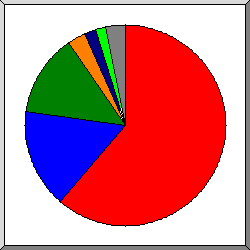
Dilimlerin temsil ettiði büyüklük: sayfa eriþim sayýsý.
Safari
Go-http-client
Firefox
Netscape (compatible)
Apache-HttpClient
Expanse, a Palo Alto Networks company, searches across the global IPv4 space multiple times per day to identify customers' presences on the Internet. If you would like to be excluded from our scans, please send IP addresses
Mozilla
diðer
browserlar listeleniyor - en az 1 kez eriþimi gösterir, Sýralama: sayfa eriþim sayýsý.
| no. | eriþim | sayfa | browser |
|---|---|---|---|
| 1 | 5691 | 286 | Safari |
| 5285 | 242 | Safari/537 | |
| 344 | 33 | Safari/604 | |
| 12 | 6 | Safari/534 | |
| 3 | 3 | Safari/533 | |
| 47 | 2 | Safari/605 | |
| 2 | 102 | 88 | Go-http-client |
| 92 | 78 | Go-http-client/1 | |
| 10 | 10 | Go-http-client/2 | |
| 3 | 3227 | 77 | Firefox |
| 3196 | 55 | Firefox/111 | |
| 9 | 9 | Firefox/58 | |
| 4 | 4 | Firefox/104 | |
| 2 | 2 | Firefox/10 | |
| 1 | 1 | Firefox/110 | |
| 1 | 1 | Firefox/112 | |
| 1 | 1 | Firefox/40 | |
| 1 | 1 | Firefox/14 | |
| 1 | 1 | Firefox/33 | |
| 5 | 1 | Firefox/109 | |
| 4 | 30 | 12 | Netscape (compatible) |
| 5 | 9 | 9 | Apache-HttpClient |
| 9 | 9 | Apache-HttpClient/5 | |
| 6 | 7 | 7 | Expanse, a Palo Alto Networks company, searches across the global IPv4 space multiple times per day to identify customers' presences on the Internet. If you would like to be excluded from our scans, please send IP addresses |
| 7 | 7 | Expanse, a Palo Alto Networks company, searches across the global IPv4 space multiple times per day to identify customers' presences on the Internet. If you would like to be excluded from our scans, please send IP addresses/domains | |
| 7 | 13 | 5 | Mozilla |
| 8 | 2 | 2 | UCWEB |
| 2 | 2 | UCWEB/2 | |
| 9 | 2 | 2 | curl |
| 2 | 2 | curl/7 | |
| 10 | 4 | 2 | |
| 4 | 2 | WhatsApp/2 | |
| 11 | 2 | 2 | MSIE |
| 1 | 1 | MSIE/8 | |
| 1 | 1 | MSIE/6 | |
| 12 | 1 | 1 | python-requests |
| 1 | 1 | python-requests/2 | |
| 19 | 0 | [not listed: 2 browserlar] |
(Git: Ýlk Sayfa | Genel Özet | Aylýk Rapor | Günlük Özet | Saatlik Özet | Site Tipi Raporu | Organizasyon Raporu | Yönlendirmeler Raporu | Baþarýsýz Gönderiler Raporu | Gönderici Site Raporu | Kullanýlan Browser Raporu | Kullanýlan Browserlar Özeti | Ýþletim Sistemi Raporu | Durum Kodu Raporu | Dosya Boyutu Raporu | Dosya Tipi Raporu | Dizin Raporu | Eriþim Raporu)
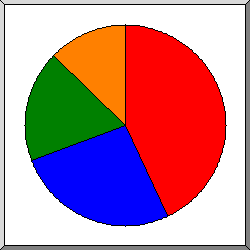
Dilimlerin temsil ettiði büyüklük: sayfa eriþim sayýsý.
Windows
iþletim sistemi bilinmiyor
Unix
Macintosh
iþlerim sistemleri listeleniyor, Sýralama: sayfa eriþim sayýsý.
| no. | eriþim | sayfa | sistem |
|---|---|---|---|
| 1 | 7395 | 202 | Windows |
| 7318 | 188 | Windows NT | |
| 74 | 11 | Bilinmeyen Windows | |
| 3 | 3 | Windows XP | |
| 2 | 238 | 134 | iþletim sistemi bilinmiyor |
| 3 | 895 | 85 | Unix |
| 894 | 84 | Linux | |
| 1 | 1 | BSD | |
| 4 | 581 | 72 | Macintosh |
(Git: Ýlk Sayfa | Genel Özet | Aylýk Rapor | Günlük Özet | Saatlik Özet | Site Tipi Raporu | Organizasyon Raporu | Yönlendirmeler Raporu | Baþarýsýz Gönderiler Raporu | Gönderici Site Raporu | Kullanýlan Browser Raporu | Kullanýlan Browserlar Özeti | Ýþletim Sistemi Raporu | Durum Kodu Raporu | Dosya Boyutu Raporu | Dosya Tipi Raporu | Dizin Raporu | Eriþim Raporu)
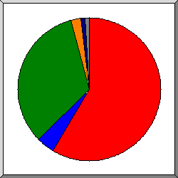
Dilimlerin temsil ettiði büyüklük: eriþim sayýsý.
200 OK
302 Document found elsewhere
304 Not modified since last retrieval
404 Document not found
4xx [Miscellaneous client/user errors]
diðer
durum kodlarý listeleniyor, Numara sýralý.
| eriþim | durum kodu |
|---|---|
| 6212 | 200 OK |
| 435 | 302 Document found elsewhere |
| 2909 | 304 Not modified since last retrieval |
| 1 | 3xx [Miscellaneous redirections] |
| 1 | 401 Authentication required |
| 45 | 403 Access forbidden |
| 266 | 404 Document not found |
| 3 | 405 Method not allowed |
| 116 | 4xx [Miscellaneous client/user errors] |
| 65 | 500 Internal server error |
(Git: Ýlk Sayfa | Genel Özet | Aylýk Rapor | Günlük Özet | Saatlik Özet | Site Tipi Raporu | Organizasyon Raporu | Yönlendirmeler Raporu | Baþarýsýz Gönderiler Raporu | Gönderici Site Raporu | Kullanýlan Browser Raporu | Kullanýlan Browserlar Özeti | Ýþletim Sistemi Raporu | Durum Kodu Raporu | Dosya Boyutu Raporu | Dosya Tipi Raporu | Dizin Raporu | Eriþim Raporu)
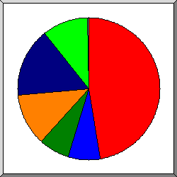
Dilimlerin temsil ettiði büyüklük: eriþim sayýsý.
0
11B- 100B
101B- 1kB
1kB- 10kB
10kB-100kB
100kB- 1MB
| boyut | eriþim | bytes% |
|---|---|---|
| 0 | 3900 | |
| 1B- 10B | 12 | |
| 11B- 100B | 732 | 0.01% |
| 101B- 1kB | 638 | 0.09% |
| 1kB- 10kB | 1172 | 2.00% |
| 10kB-100kB | 1564 | 22.35% |
| 100kB- 1MB | 1103 | 75.55% |
(Git: Ýlk Sayfa | Genel Özet | Aylýk Rapor | Günlük Özet | Saatlik Özet | Site Tipi Raporu | Organizasyon Raporu | Yönlendirmeler Raporu | Baþarýsýz Gönderiler Raporu | Gönderici Site Raporu | Kullanýlan Browser Raporu | Kullanýlan Browserlar Özeti | Ýþletim Sistemi Raporu | Durum Kodu Raporu | Dosya Boyutu Raporu | Dosya Tipi Raporu | Dizin Raporu | Eriþim Raporu)
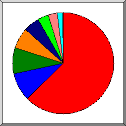
Dilimlerin temsil ettiði büyüklük: eriþim miktarý.
.jpg [JPEG graphics]
.js [JavaScript code]
[dosya uzantýsý yok]
[Dizinler]
.css [Cascading Style Sheets]
.webp
.png [PNG graphics]
.woff2
dosya tipleri listeleniyor - en az 0.1% trafiði olan, Sýralama: eriþim miktarý.
| eriþim | bytes% | dosya uzantýsý |
|---|---|---|
| 1217 | 60.30% | .jpg [JPEG graphics] |
| 1377 | 9.49% | .js [JavaScript code] |
| 2782 | 8.90% | [dosya uzantýsý yok] |
| 505 | 7.11% | [Dizinler] |
| 1629 | 5.99% | .css [Cascading Style Sheets] |
| 371 | 3.54% | .webp |
| 819 | 2.89% | .png [PNG graphics] |
| 325 | 1.71% | .woff2 |
| 96 | 0.08% | [not listed: 11 dosya uzantýlarý] |
(Git: Ýlk Sayfa | Genel Özet | Aylýk Rapor | Günlük Özet | Saatlik Özet | Site Tipi Raporu | Organizasyon Raporu | Yönlendirmeler Raporu | Baþarýsýz Gönderiler Raporu | Gönderici Site Raporu | Kullanýlan Browser Raporu | Kullanýlan Browserlar Özeti | Ýþletim Sistemi Raporu | Durum Kodu Raporu | Dosya Boyutu Raporu | Dosya Tipi Raporu | Dizin Raporu | Eriþim Raporu)
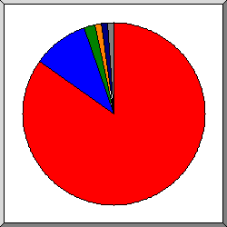
Dilimlerin temsil ettiði büyüklük: eriþim miktarý.
/public/
[Ana dizin]
/category/
/users/
/admin/
diðer
Dizinler listeleniyor - en az 0.01% trafiði olan, Sýralama: eriþim miktarý.
| eriþim | bytes% | bölüm |
|---|---|---|
| 5782 | 83.84% | /public/ |
| 872 | 10.56% | [Ana dizin] |
| 654 | 2.23% | /category/ |
| 84 | 1.25% | /users/ |
| 425 | 1.10% | /admin/ |
| 13 | 0.35% | /_debugbar/ |
| 10 | 0.15% | /brand/ |
| 9 | 0.13% | /password/ |
| 6 | 0.11% | /blog/ |
| 496 | 0.09% | /aiz-uploader/ |
| 14 | 0.06% | http:// |
| 697 | 0.06% | /home/ |
| 4 | 0.02% | /cPanel_magic_revision_1648610195/ |
| 1 | 0.01% | /cPanel_magic_revision_1677708914/ |
| 54 | 0.04% | [not listed: 12 bölümler] |
(Git: Ýlk Sayfa | Genel Özet | Aylýk Rapor | Günlük Özet | Saatlik Özet | Site Tipi Raporu | Organizasyon Raporu | Yönlendirmeler Raporu | Baþarýsýz Gönderiler Raporu | Gönderici Site Raporu | Kullanýlan Browser Raporu | Kullanýlan Browserlar Özeti | Ýþletim Sistemi Raporu | Durum Kodu Raporu | Dosya Boyutu Raporu | Dosya Tipi Raporu | Dizin Raporu | Eriþim Raporu)
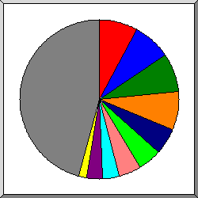
Dilimlerin temsil ettiði büyüklük: eriþim sayýsý.
/public/assets/js/aiz-core.js
/public/assets/js/vendors.js
/public/assets/css/aiz-core.css
/public/assets/css/vendors.css
/category/nav-element-list
/
/aiz-uploader/get_file_by_ids
/public/assets/css/custom-style.css
/public/assets/fonts/la-solid-900.woff2
/home/section/best_selling
diðer
dosyalar listeleniyor - en az 20 eriþim, Sýralama: eriþim sayýsý.
| eriþim | bytes% | son saat | dosya |
|---|---|---|---|
| 688 | 0.31% | 26/Haz/22 09:15 | /public/assets/js/aiz-core.js |
| 688 | 9.16% | 26/Haz/22 09:15 | /public/assets/js/vendors.js |
| 688 | 1.62% | 26/Haz/22 09:15 | /public/assets/css/aiz-core.css |
| 686 | 4.36% | 26/Haz/22 09:15 | /public/assets/css/vendors.css |
| 521 | 0.01% | 26/Haz/22 08:39 | /category/nav-element-list |
| 499 | 7.11% | 26/Haz/22 11:18 | / |
| 345 | 0.03% | 26/Haz/22 08:40 | /aiz-uploader/get_file_by_ids |
| 253 | 26/Haz/22 09:15 | /public/assets/css/custom-style.css | |
| 245 | 1.55% | 26/Haz/22 09:15 | /public/assets/fonts/la-solid-900.woff2 |
| 140 | 26/Haz/22 08:40 | /home/section/best_selling | |
| 140 | 26/Haz/22 08:40 | /home/section/featured | |
| 139 | 0.06% | 26/Haz/22 08:40 | /home/section/home_categories |
| 139 | 26/Haz/22 08:40 | /home/section/auction_products | |
| 139 | 26/Haz/22 08:40 | /home/section/best_sellers | |
| 134 | 0.17% | 26/Haz/22 08:32 | /public/uploads/all/b4jNnq8Ust98un6YZ4kssWrOalXYSAZg50NMxBH9.png |
| 125 | 1.15% | 26/Haz/22 08:40 | /public/uploads/all/1R8iO3ZMW0KlS6KQfE1Eu1OesnwIZy9B9PVgbOcr.webp |
| 124 | 0.55% | 26/Haz/22 08:40 | /public/uploads/all/vYHOoLPKnCjophYaiW0lv9hHX2w6fRwkmmhAdYQ2.webp |
| 122 | 1.84% | 26/Haz/22 08:40 | /public/uploads/all/ufeexNDUpvbX1a9XfKZQGKVkIAaV4RReB3d4QTLA.webp |
| 120 | 0.06% | 26/Haz/22 08:39 | /aiz-uploader/get_uploaded_files |
| 120 | 0.06% | 26/Haz/22 08:39 | /aiz-uploader/get_uploaded_files?sort=newest |
| 100 | 0.24% | 26/Haz/22 09:15 | /public/uploads/all/kSdTeeKoXL5eD20ALjc1Gwuk2JEKUAvbISorqBGP.png |
| 90 | 0.19% | 26/Haz/22 09:15 | /public/assets/img/placeholder-rect.jpg |
| 89 | 0.04% | 26/Haz/22 08:39 | /aiz-uploader |
| 65 | 1.29% | 26/Haz/22 09:15 | /public/uploads/all/z4tiOPSXXTdWGSSVpRcE9MB79TC1EBIAMBlasXhd.png |
| 63 | 0.97% | 26/Haz/22 08:39 | /users/login |
| 62 | 0.05% | 26/Haz/22 09:15 | /public/assets/img/placeholder.jpg |
| 61 | 0.04% | 26/Haz/22 09:15 | /public/assets/img/avatar-place.png |
| 61 | 0.22% | 26/Haz/22 09:15 | /public/assets/img/warning.png |
| 61 | 4.13% | 26/Haz/22 08:37 | /public/uploads/all/UryxZIaNtFC6suoDR9W63UcUfaPAmITpiwRlxTLX.jpg |
| 59 | 3.56% | 26/Haz/22 08:37 | /public/uploads/all/NsWgfLCPevpK7IAoBiIT4RGmnhf7zDtQ0MPasLEr.jpg |
| 57 | 2.73% | 26/Haz/22 08:37 | /public/uploads/all/rFMad08mSx5F7k0gzejoIGwS1MlUoGLkZIioFqFj.jpg |
| 57 | 1.28% | 26/Haz/22 08:37 | /public/uploads/all/4cj4fdszmrMc69hItKhE26VLtfdGgRe6KymPPRH7.jpg |
| 57 | 5.52% | 26/Haz/22 08:37 | /public/uploads/all/bYUgfIdNKOWiq1DMdedQAsNfXYWoHMKEiiSRHfjB.jpg |
| 57 | 1.44% | 26/Haz/22 08:37 | /public/uploads/all/6GGfwBoDMpvRVJWJK5FsCTwBJtAra9Chg76aHNuQ.jpg |
| 51 | 3.39% | 26/Haz/22 08:37 | /public/uploads/all/gqU38xF64DgMunle74rzymGERkgc4xzAogK04LVc.jpg |
| 50 | 1.34% | 26/Haz/22 08:37 | /public/uploads/all/IOYddh4fp9nJGVZ6FJ5oRgG2q3cfsz9dqKecU2rk.jpg |
| 48 | 3.09% | 26/Haz/22 08:40 | /public/uploads/all/INg0qWHyOf5sBMQ43jztF6wmRy9nCVH6465Gmru2.jpg |
| 48 | 0.21% | 26/Haz/22 08:37 | /public/uploads/all/pblJH0rfVagR6Fp1nMXt8B23KQd9ktwKVUb0gUAC.jpg |
| 48 | 1.22% | 26/Haz/22 08:37 | /public/uploads/all/SFMzYhNYc7lWUvfE71baPeqQLVkQiiGVMxsqUHW7.jpg |
| 48 | 0.01% | 26/Haz/22 08:27 | /public/assets/css/font/summernote.woff2 |
| 47 | 4.43% | 26/Haz/22 08:37 | /public/uploads/all/AWPw87OVq3bDka6ATnds8srl2sINwSiAKTpwj1RR.jpg |
| 47 | 2.00% | 26/Haz/22 08:37 | /public/uploads/all/G8chswKV83Jby80wyYPBQOgY5amYUqITfM69gxpQ.jpg |
| 47 | 3.65% | 26/Haz/22 08:37 | /public/uploads/all/SNLFn9Fog23SuHPA8QtQJcGrqjX3yLuTWHHfG9le.jpg |
| 45 | 1.26% | 26/Haz/22 08:37 | /public/uploads/all/Kx8xhBfSn2qpAdzG8sXR5sfGCCiJwiTLXMETTxcB.jpg |
| 41 | 2.22% | 26/Haz/22 08:37 | /public/uploads/all/YPl8difMSbmCOlTPemV2TXtl7BjD6Hb6o3SHAXRx.jpg |
| 41 | 2.98% | 26/Haz/22 08:39 | /public/uploads/all/N22IAJdcFRmj8GYmkfDCQI20qoK1QE3mHhPz2bDY.jpg |
| 40 | 2.37% | 26/Haz/22 08:27 | /public/uploads/all/epxfBwtnSZxKM0oCZu2xkN28brnsgl1DQt6M5uwa.jpg |
| 40 | 1.47% | 26/Haz/22 08:37 | /public/uploads/all/GWdxk1tjBIC4ZgrYDiZS7zRZE4UPCfeGQwrKqt4U.jpg |
| 40 | 3.61% | 26/Haz/22 08:37 | /public/uploads/all/zXGpBHRZS5pkdrWN0Gcg0lAdEJGkogAUI9t27GsK.jpg |
| 37 | 3.76% | 26/Haz/22 08:37 | /public/uploads/all/NLQDBN6LBqGVh7xiOWsFFJh3GNNMNdFIVXE5eQjk.jpg |
| 36 | 4.19% | 26/Haz/22 08:37 | /public/uploads/all/vEoqS99v7HTvmORsTniNqCwxDowcG583916qx9dB.jpg |
| 36 | 26/Haz/22 07:05 | /admin/currency/update_status | |
| 31 | 26/Haz/22 08:33 | /aiz-uploader/upload | |
| 30 | 0.09% | 26/Haz/22 08:10 | /admin/categories |
| 29 | 0.05% | 26/Haz/22 07:37 | /public/uploads/all/GaSi1BBDMU7ZFD5aOamRQKMpVjKqvWgHaCkmShQ2.png |
| 28 | 0.10% | 26/Haz/22 08:14 | /admin/website/footer |
| 28 | 0.10% | 26/Haz/22 08:14 | /admin/website/footer?lang=tr |
| 28 | 0.07% | 26/Haz/22 07:57 | /admin/languages/5 |
| 27 | 0.14% | 26/Haz/22 08:27 | /public/assets/fonts/la-brands-400.woff2 |
| 26 | 0.07% | 26/Haz/22 08:12 | /admin/website/header |
| 23 | 0.29% | 26/Haz/22 08:40 | /categories |
| 22 | 0.06% | 26/Haz/22 08:14 | /admin/website/pages |
| 21 | 0.27% | 26/Haz/22 09:15 | /users/registration |
| 1192 | 7.96% | 26/Haz/22 08:41 | [not listed: 464 dosyalar] |